Guía de uso del dron OVLI
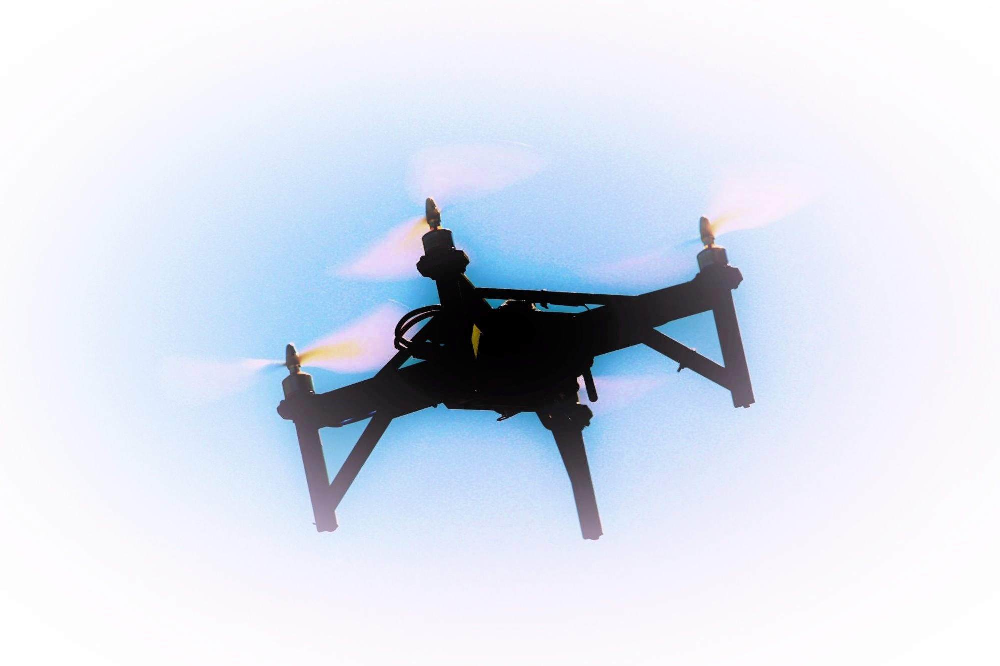
Proyecto Vuela (vuela.cc)
Versión 1 – mayo de 2019 (Español)
Licencia: Creative Commons CC-BY
Documento abierto para modificaciones y sugerencias:
https://docs.google.com/document/d/1_JU6kWQkkMbWsNESzSVhhXOGH1_aeSgy2gr4xeK5eRg/edit?usp=sharing
Indice
Introducción
Parte 1 - Advertencias de seguridad
Parte 3 - Instrucciones de vuelo
Parte 4 - Programación de una misión autónoma
Parte 5 - Uso de la cámara
Parte 6 - Geo-referenciación de las imágenes
Parte 7 - Procesamiento de imágenes con WebODM (OpenDroneMap)
Introducción
Parte 1 - Advertencias de seguridad
Un dron puede ser fácil de construir y de usar (más fácil construir que usar, sin duda). Sin embargo, puede llegar a ser muy peligroso, para nosotras mismas y para otras y otros, por lo que debemos tomar las medidas de seguridad necesarias durante el vuelo.
- Siempre retirar las hélices cada vez que se hacen pruebas de motores o cualquier prueba que involucre que el dron esté funcionando, ya sea que esté en movimiento o detenido. Las hélices pueden causar heridas de consideración.
- Siempre conectar la batería al final de cada proceso (por ejemplo al chequear los motores o luego de realizar un vuelo), chequeando antes que las conexiones sean las correctas y se encuentren en buen estado (que no haya cables desconectados o dañados).
- Asimismo, luego de un vuelo o de una prueba, también lo primero que hay que hacer es desconectar la batería.
- Es recomendable hacer un chequeo de prevuelo siempre antes de volar, confirmando que todas las partes estén adecuadamente ajustadas. Es ideal que este chequeo sea realizado no sólo por una persona, sino que por al menos 2 personas distintas. Esto incluye chequear que las hélices estén bien ajustadas y que los motores están ajustados a su base y a la estructura del dron. Los motores tienen dos pequeños tornillos a cada lado para fijarlos a su base, asegúrate de apretarlos bien con una llave Allen y fijarlos con fijatornillos para evitar que se suelten con la vibración. Al final de esta guía podrás encontrar la lista de verificaciones prevuelo completa.
- Es necesario siempre comprobar que los precintos (o bridas o cinchas) que se utilicen estén ajustadas y en buenas condiciones.
- Las baterías LiPo son inflamables, por lo que hay que tomar ciertas precauciones, tales como evitar dejarlas bajo pleno sol o en lugares con altas temperaturas, almacenarlas en una bolsa para baterías LiPo, y utilizar un cargador-balanceador.
- Durante el transporte asegúrate que el dron no sufra ninguna deformación (por ejemplo, hélices dobladas), puesto que esto puede generar un accidente durante el vuelo. Siempre revisa con detención el dron antes de comenzar a utilizarlo.
- Es conveniente volar con un cuadricoptero de juguete o un simulador (por ejemplo este) antes de volar este dron, puesto que los motores, las hélices o incluso la estructura en sí misma durante una caída pueden generar graves heridas.
Parte 2 - Verificaciones pre-vuelo
- Computadora encendida
- Computadora con batería suficiente
- Mission Planner abierto
- Mapas descargados
- Módulo de telemetría USB conectado
- Antena modulo USB vertical
- Estructura sana
- Hélices aseguradas, sanas, dirección correcta
- Motores asegurados y sin daños
- Variadores asegurados y sin daños
- GPS asegurado y sin daños, mástil en posición vertical
- Receptor de radio y conexiones sin daños
- Antenas del receptor de radio aseguradas y mirando en direcciones distintas
- Módulo de telemetría asegurado
- Pixhawk y conexiones asegurados
- Batería instalada y asegurada
- Alarma de batería conectada
- Radiocontrol: palanca de acelerador baja
- Radiocontrol: encendido y con batería
- Radiocontrol: verificar que esté seleccionado el modelo correcto
- Colocar el dron en lugar seguro para despegue y aterrizaje con “vuelta a casa”
- Asegurar cables de la batería
- Conectar la batería sin mover el dron
- Hacer clic en “Conectar” en Mission Planner
- Antena de telemetría en posición vertical
- Señal de telemetría mayor a 75%
- Verificar respuesta correcta de pitch y roll
- Verificar altitud 0 (+/- 1 o 2 metros)
- Verificar que el voltaje de batería esté en máximo (>12.5) (que la bateria este bien cargada)
- Verificar GPS en “3D Fix” o “3D dgps”
- Verificar plan de vuelo (opcional)
Parte 3 - Instrucciones de vuelo
Parte 4 - Programación de una misión autónoma
Determinar el área a relevar previamente
- Utilizar la aplicación android “GPS Logger” (https://play.google.com/store/apps/details?id=eu.basicairdata.graziano.gpslogger&hl=es)
- Realizar un recorrido (“Track”) alrededor del área a relevar, y exportarlo en formato kml
- Si no es posible ver la carpeta “GPSLogger” desde la computadora, acceder a la misma desde el teléfono y copiar el archivo KML a la carpeta “Documentos”. Otra alternativa es compartir el recorrido mediante email.
- Iniciar Mission Planner, e ir a la ventana “FLIGHT PLAN”
- Hacer clic con el botón derecho del mouse, y luego seleccionar la opción Map Tool > KML Overlay para superponer el recorrido realizado en la pantalla
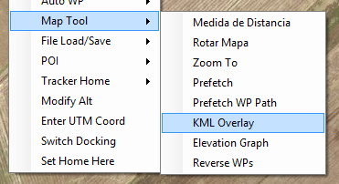
- Cuando pregunta ‘Do you want to lead this into the flight data screen?’ se puede responder que ‘No’
- Cuando pregunta ‘Zoom to the center…?’ es conveniente decir que ‘Sí’, ya que nos ubicará la pantalla automáticamente en el lugar que relevamos
Hacer un polígono del área a relevar
Este será el área exacta que recorreremos con el dron - el recorrido hecho con el GPSLogger no es exacto y lo podemos considerar como un ‘borrador’
- Ir a la ventana “FLIGHT PLAN”
- Cambiar al modo de ‘dibujar polígono’: esto se hace haciendo clic en un ícono redondo ubicado en la parte izquierda del mapa. El ícono se pondrá verde cuando estemos en modo de ‘dibujar polígono’
- Dibujar el área haciendo clic en los vértices del área de interés (tener en cuenta de hacer el polígono un poco más grande que el área que queremos cubrir, ya que el GPS del teléfono y del dron ambos tienen un error de entre 1 y 5 metros)
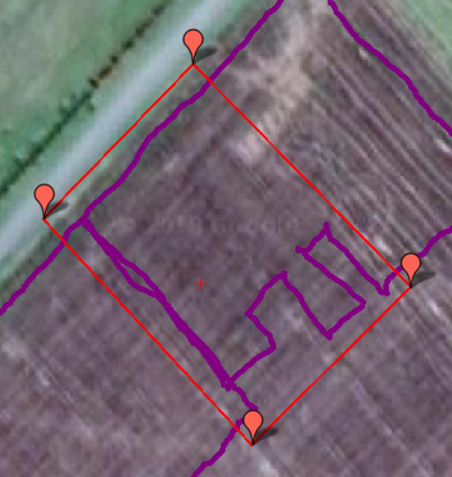
- Guardar el polígono que dibujamos en un archivo, haciendo clic derecho y seleccionando la opción Draw Polygon > Save Polygon
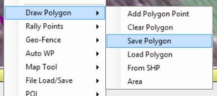
Diseñar la misión
- Mover el marcador de “HOME” a la posición inicial del vuelo. Esto se puede hacer arrastrando el marcador de ‘Home’ (si está cerca), o directamente haciendo click derecho en el lugar deseado y haciendo clic en “Set Home Here”. El valor real de Home va a ser determinado automáticamente cuando encendamos el dron y se armen los motores, por lo que esta será solo una ubicación estimativa que utilizaremos sólo para diseñar la misión.
- Hacer clic derecho y seleccionar “Auto WP” > “Survey (Grid)”
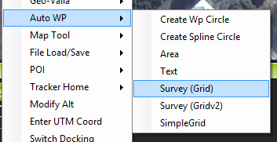
- En la pestaña “Simple”:
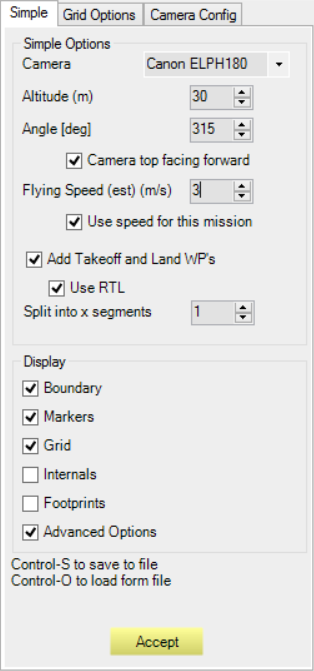
- Seleccionar de la lista la cámara a utilizar. En caso que la cámara a utilizar no esté en la lista, ir a la pestaña ‘Camera Config’, hacer clic en ‘Load Sample Photo’ y cargar una foto tomada con esa cámara. El programa detectará automáticamente la resolución, distancia focal, etc. Luego hacer clic en ‘Save’ para guardar esos parámetros con el nombre de la cámara.
- Seleccionar altura, de acuerdo a resolución, cobertura y superposición de imágenes
- Seleccionar la dirección de las pasadas (“Angle”). El programa sugiere automáticamente una dirección, pero se puede ajustar.
- Seleccionar la velocidad de vuelo
- Configurar despegue/aterrizaje automáticos habilitando las opciones ‘Add Takeoff and Land WPs’ y ‘Use RTL’
- En la pestaña “Grid Options”: (si no aparece esta pestaña, hay que habilitar la opción ‘Advanced Options’)
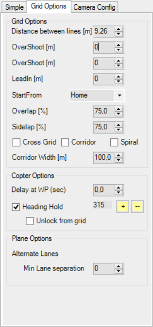
- Seleccionar superposición en la línea y entre pasadas (“Overlap” y “Sidelap”). Es recomendable que ambos sean mayores de 70%
- Verificar el valor de “Photo every X sec” indicado abajo: si es menor a 3 segundos, bajar velocidad o disminuir “overlap”
- En la pestaña “Camera Config”
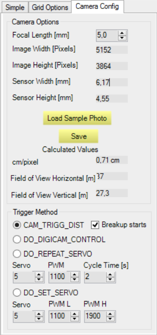
- Verificar que los parámetros coinciden con los de la cámara
- Verificar los valores calculados de resolución y cobertura
- Verificar los parámetros de la misión:
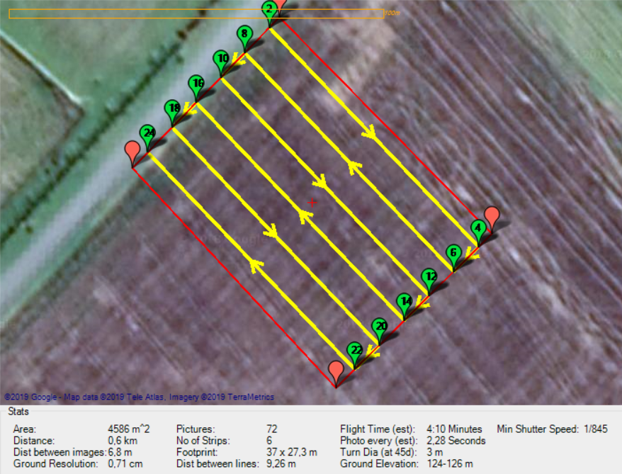
- Verificar el valor de “Photo every X sec” indicado abajo: si es menor al tiempo que tarda nuestra cámara en tomar cada foto (suele ser entre 2 y 3 segundos), bajar la velocidad de vuelo (en la pestaña ‘Simple’) o disminuir el “Overlap” (en la pestaña ‘Grid Options’)
- Verificar el valor estimado de tiempo de vuelo (“Flight time”): si es mayor al tiempo máximo de vuelo de nuestro dron, es conveniente realizar un vuelo a una altura mayor, para cubrir la misma área con menos pasadas.
- Guardar y enviar misión:
- Guardar los parámetros utilizados para diseñar la misión mediante las teclas Control+S. Se sugiere incluir la fecha y otros datos de utilidad en el nombre de archivo. Mediante las teclas Control+O podremos en otro momento recuperar esos parámetros para hacer alguna modificación
- Cliquear “Accept” para generar la misión[a]
- Grabar la misión generada en otro archivo haciendo clic derecho y seleccionando la opción File Load/Save > Save WP File
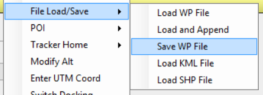
- Conectar el dron al Mission Planner
- Cliquear en “Escribir WPs” en el lado derecho de la pantalla
Parte 5 - Uso de la cámara
Estas instrucciones son para el modelo de cámara Canon ELPH180, pero sirven para otros modelos similares. Usaremos el software de CHDK para poder utilizar la cámara en formato manual (ajustar la velocidad de obturación, el ISO, utilizar time-lapse, etc.). Más info en: http://chdk.wikia.com/wiki/CHDK
Para instrucciones de instalación del software, ver la Guía de construcción del OVLI en vuela.cc/guia
Captura de imágenes de forma automática
- Encender la cámara
- Presionar levemente el botón de disparo para pasar al modo de captura
- Presionar el botón “PLAY” para pasar al modo <ALT>
- Iniciar la captura automática mediante el botón de disparo y presionarlo nuevamente para detenerlo una vez obtenidas las imágenes deseadas
Sólo la primera vez:
- Cargar/configurar el script [b](programa de captura automática)
- Abajo a la izquierda se muestra el script (programa) cargado. Si no dice “Intervalometer”, hay que cargarlo (ver pasos siguientes)
- Presionar el botón “MENU”
- Ir a “Script…”, luego a “Load Script from File…”
- Seleccionar “INTERVAL.BAS”
- Configurar el intervalo entre imágenes (al menos 3 segundos) bajando hasta donde dice “interval (sec)” y moviendo hacia la izquierda/derecha para disminuir/aumentar el valor
- Salir presionando el botón “MENU”
Cada vez que cambien las condiciones (principalmente la intensidad de luz):
- Configurar los parámetros de captura
- Presionar el botón “MENU”
- Ir a “Enhanced Photo Operations”
- Elegir las siguientes opciones:
- “Disable Overrides”: No
- “Include AutoIso…”: desmarcar la opción [ ]
- “Override Tv type”: ShrtExp
- “Short Exp Value”: marcar la opción [●] y configurar el valor de duración de la apertura en segundos. El valor no deberá ser muy alto, para evitar que las imágenes salgan movidas. Por ejemplo: 0.001 (equivalente a 1/1000 seg) es un valor adecuado
- “Override ISO”: marcar la opción [●] y configurar el valor de sensibilidad ISO. Utilizar los valores preestablecidos de la cámara: 100, 200, 400, 800, 1600, 3200. Para un día soleado al mediodía y velocidad de apertura 0.001s (1/1000s), utilizar ISO 100. Para días de menor radiación, subir el valor ISO. Es conveniente ajustar el “brillo” de las imágenes mediante el valor de ISO y no mediante la velocidad de apertura, para evitar imágenes movidas, aunque teniendo en cuenta que a mayor ISO, menor la relación señal:ruido.
- “Override Subj Di”: Off
- “ND filter state”: Out
- “Disable Overrides on Startup”: No
- Salir presionando el botón “MENU”
- Tomar una imagen de prueba y revisarla
- Iniciar el script mediante el botón de disparo y presionarlo nuevamente para detenerlo una vez obtenidas las imágenes deseadas
- Salir del modo <ALT> mediante el botón “PLAY”
- Pasar al modo de revisión de imágenes dejando presionado el botón “PLAY” unos segundos
- Elegir mediante el botón “DISP” la vista que muestra los parámetros de la imagen
- Comprobar que la velocidad de apertura y el valor ISO coincidan con los seleccionados
- Comprobar mediante el histograma que los valores se encuentren cercanos al centro del mismo
- Presionar levemente el botón de disparo para volver al modo de captura
- Presionar el botón “PLAY” para volver al modo <ALT>
Parte 6 - Geo-referenciación de las imágenes
La geo-referenciación es el proceso de asignarle una posición geográfica (latitud y longitud) a cada una de las imágenes que tomemos con el dron. Con algunos programas de procesamiento (por ejemplo el Agisoft Photoscan) este paso no es obligatorio, pero en el caso del software de código abierto OpenDroneMap sí lo es. Cuando la cámara utilizada no cuenta con GPS incorporado, esto se puede realizar mediante el software Mission Planner, que lo hace utilizando la información de GPS del dron registrada durante el vuelo. Los pasos a seguir son estos:
Determinar la diferencia entre la hora de la cámara y la del dron
Este dato es necesario para que el programa haga coincidir las coordenadas del GPS con cada una de las fotos. Hay dos opciones para obtener este valor:
- Una es tomar una foto de la pantalla del Mission Planner con la misma cámara, y luego comparar la ‘fecha de captura’ (‘create date’ en inglés) que figura en el archivo y el horario que se ve en la foto.
- En las ‘propiedades’ del archivo es posible que solo nos muestre horas y minutos (sin los segundos). En ese caso, podemos ver la información del archivo con alguna herramienta online (por ejemplo https://www.get-metadata.com/) o con algún software como exiftool (de código abierto; https://sno.phy.queensu.ca/~phil/exiftool/).
- Otra opción (menos precisa) es utilizar el registro del vuelo, de la siguiente forma:
- En la pestaña ‘FLIGHT DATA’, ir a ‘Telemetry Logs’ y hace clic en ‘Load Log’. Seleccionar el archivo “Telemetry Log (.tlog)” del vuelo correspondiente a las imágenes que se quieren georreferenciar.
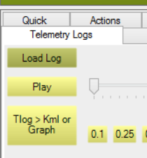
- El programa empezará a reproducir todos los datos de telemetría del vuelo en la pantalla. Deberemos observar la hora exacta en la que se realiza el despegue (se puede aumentar la velocidad con los botones 2x, 5x y 10x o adelantar/retroceder con el deslizador).
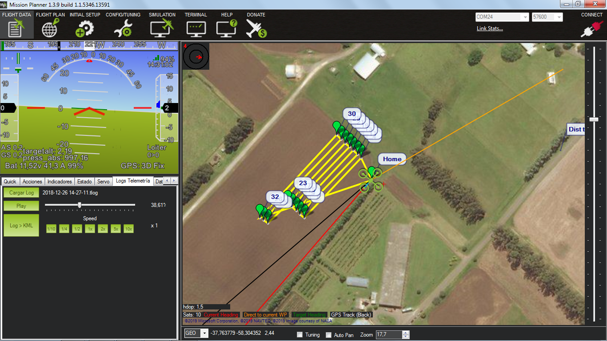
- Observar la “fecha de captura” de la imagen más próxima al momento de despegue
Procesar las imágenes en Mission Planner
- Primero deberemos descargar las imágenes de la cámara a una carpeta en nuestra computadora. Es conveniente antes de este paso eliminar imágenes previas y posteriores al vuelo, para que el proceso sea más corto.
- En Mission Planner, presionar “ctrl+F” y hacer clic en el botón “Geo ref images”.
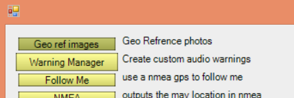
- En la nueva ventana, seleccionar el archivo “Telemetry Log (.tlog)” del vuelo correspondiente a las imágenes que se quieren georreferenciar haciendo click en Browse Log. Luego, seleccionar la carpeta que contiene las imágenes a georreferenciar haciendo clic en Browse Pictures. Y por último, seleccionar la opción ‘Time offset’. También es posible usar el log que guarda la Pixhawk en su propia tarjeta de memoria (el ‘Dataflash Log’), lo cual es útil en el caso que se haya perdido señal de telemetría durante el vuelo y no contemos con datos completos de GPS para todo el recorrido.
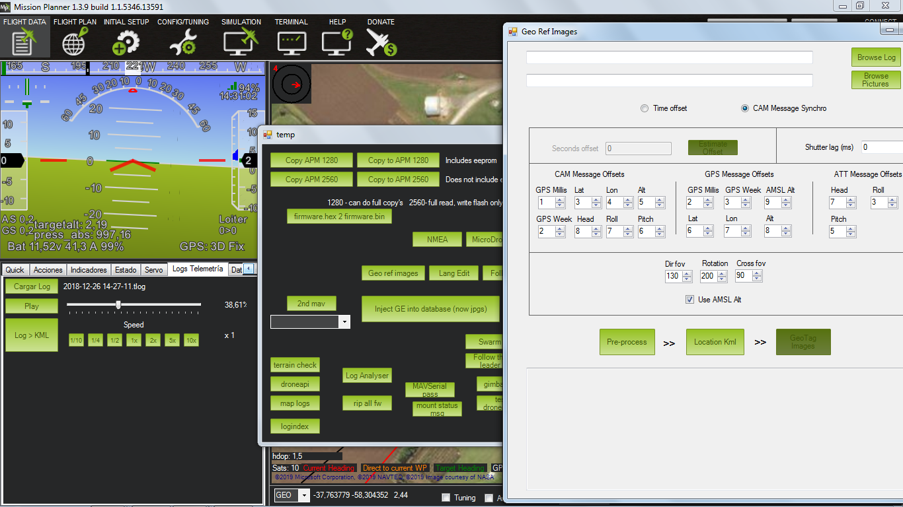
- Luego deberemos indicar el valor de ‘Seconds offset’ de acuerdo a la cantidad de segundos de diferencia entre la hora de la cámara y la del dron. Si la hora del dron coincide con la hora de la cámara, se dejará el valor 0. Si la hora del dron es anterior a la hora de la cámara, se indicará la diferencia de tiempo con valor positivo; en el caso contrario, se indicará un valor de negativo.
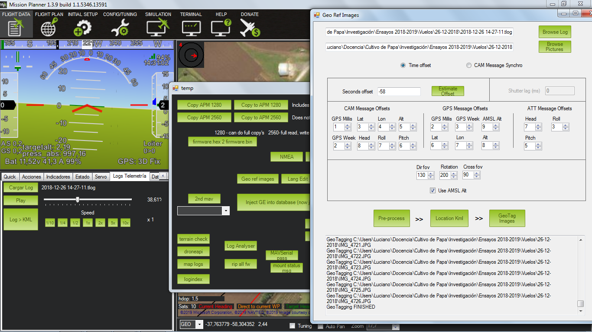
- Una vez indicado el Seconds offset, hacer clic en “Pre-process” y luego en “Geo Tag Images”. El proceso puede demorar algunos minutos dependiendo de la cantidad de fotos a georreferenciar.
- Las imágenes georreferenciadas se guardarán en una nueva carpeta, dentro de la misma carpeta de origen de las imágenes originales con el nombre “Geotagged”.

Parte 7 - Procesamiento de imágenes con WebODM (OpenDroneMap)
El software de código abierto OpenDroneMap (https://www.opendronemap.org/) permite procesar las imágenes aéreas obtenidas y unirlas para generar un ortomosaico u ortofotografía. Este mosaico es la unión de las fotos individuales, corregidas de forma tal que todos los elementos estén en la misma escala, sin deformaciones ni perspectiva, tal como en un plano o un mapa.
La forma más sencilla de utilizar este software es a través de su versión ‘web’ llamada WebODM, la cual puede ser instalada en una computadora personal, en un servidor público o privado (para acceder remotamente), o ejecutarlo desde un pendrive USB. Existe actualmente un servicio comercial basado en este software, que permite poder utilizarlo sin tener que instalarlo, en el sitio web webodm.net. Este servicio es mantenido por los desarrolladores principales del OpenDroneMap, y se mantiene a través de la compra de ‘créditos’ para el procesamiento de imágenes (aprox 1 USD por cada 80 imágenes; al registrarse se obtienen algunos créditos gratuitos que permiten probar el sistema).
Los pasos para procesar las imágenes utilizando este servicio son los siguientes:
- Ir al sitio web webodm.net, registrarse si no lo hicieron previamente, e ir al panel de control (clic en ‘Open Dashboard’)
- Abrir la interfaz web, haciendo clic en ‘Web Interface’ y luego en ‘Web UI’
- Agregar un nombre al proyecto, seleccionar las imágenes haciendo clic en ‘Add files…’, y luego hacer clic en ‘Start Task’. Es conveniente revisar las fotos con anterioridad y eliminar las fotos que estén movidas, fuera de foco, demasiado oblicuas, etc.
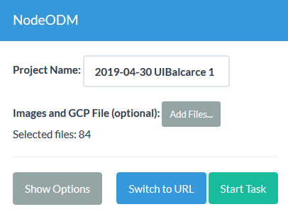
- El software empezará a procesar las imágenes, y podremos ver los pasos que va realizando si hacemos clic en ‘Console output: View’
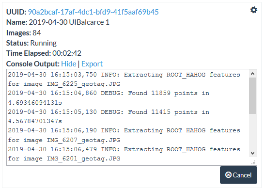
- Una vez completado el procesamiento, podemos hacer clic en ‘Download: All
Assets’ para descargar un archivo .zip con todos los resultados, o hacer clic en ‘Download: Orthophoto’ para descargar sólo el mosaico.
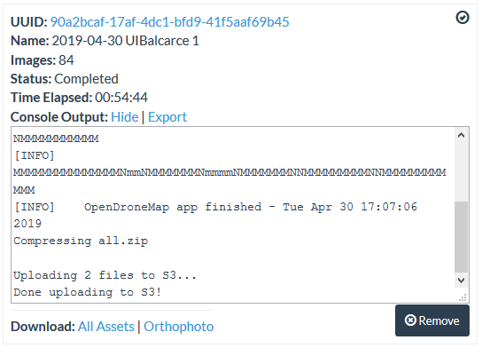
[b]agregar más abajo que se puede usar la opción "autostart"